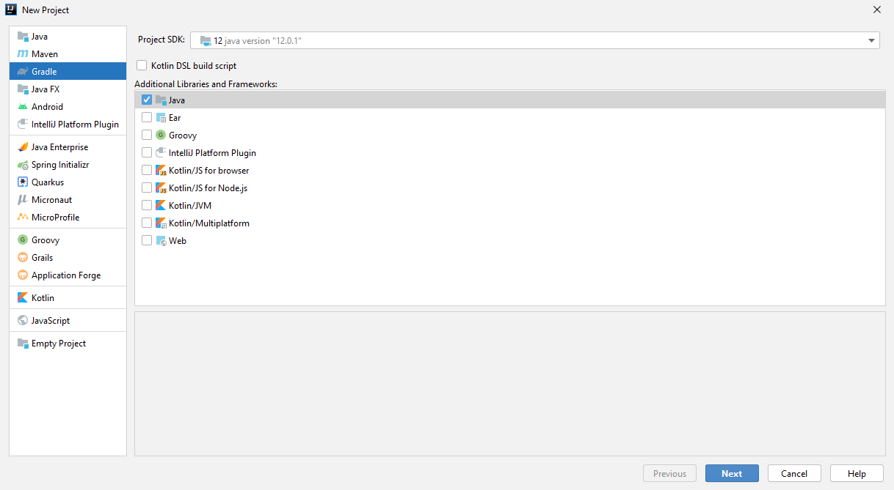
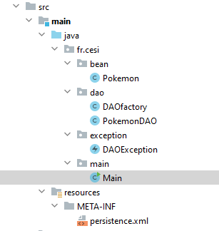

Java avancé
RIL - CESi
Programme

Présentation
Gradle
JPA
Spring ORM
Spring MVC
Spring BOOT
Présentation
un framework ? Pourquoi faire ?
- Uniformiser le travail des développeurs
- Réduire le temps de développement
- Réduire les coûts de développement
- Rendre la solution prérenne
- Avoir l'appui d'une énorme communautée
un framework ? Pourquoi faire ?
- Uniformiser le travail des développeurs
- Réduire le temps de développement
- Réduire les coûts de développement
- Rendre la solution prérenne
- Avoir l'appui d'une énorme communautée
Architecture
Une application va être découpée en 3 couches
- La couche présentation
- La couche métier
- La couche données
Framework Web
Un framework web respecte le design pattern MVC (Model View Controler)
Quelques frameworks web
- JSF
- Struts
- Spring MVC
Quelques framework de persistance des données

Spring framework
Spring est le leader sur le marché des framework Java
- Créé en 2004 par Rod Johnson
- Prend en charge la création et la mise en relation d'objets grâce à des fichiers de configuration
- Permet la création :
- D'applications web
- De micro services
- De batchs
- D'applications console
Spring est sécurisé, rapide et accroit la productivité
Gradle
Gradle est un moteur de production qui permet l'automatisation des actions nécessaire à la mise en place et l'exploitation d'une application à partir des fichiers sources.
- Apache Ant
- Maven
- Gradle
Gradle est capable de récupérer des dépendances à partir :
- des dépôts Maven
- Ivy
- SubVersion
- N'importe quel système de fichiers
Gradle est basé sur Groovy
Il gère la compilation , les tests, la génération des jar et/ou war et le déploiement

Gradle version 6.7.1
Génération d'un nouveau projet Gradle
gradle init- build.gradle
- settings.gradle
- .gradle
- gradle
- gradlew
- gradlew.bat
plugins
https://plugins.gradle.org/
plugins {
id 'application'
}
repositories {
jcenter()
}
dependencies {
testImplementation 'junit:junit:4.13'
implementation 'com.google.guava:guava:29.0-jre'
}
application {
mainClass = 'fr.cesi.App'
}L'ajout d'un plugin ajoute des tâches supplémentaires à Gradle
- assemble
- build
- clean
- jar
- ...
IntelliJ
Bien entendu, Gradle est intégré à IntelliJ
TP

- Créer une application JavaEE
- Ajouter le plugin gretty
- Créer un dossier webapp dans le dossier "src/main/" et ajoutez y un fichier index.html
- En utilisant Bootstrap, afficher la liste des 5 meilleurs films de tout les temps (gladiator doit en faire parti ^^)
- Utiliser la commande gradle adéquate pour lancer un serveur Tomcat contenant l'application créé
JPA (Java Persistence API)
Pourquoi JPA ?
- Java est orienté objet
- Les bases de données sont relationnelles
Un ORM permet de faire correspondre un objet Java à une base de donnée relationnelle
Les annotations vont faire correspondre :
- une classe avec une table
- un attribut avec une colonne

package fr.cesi;
public class Avengers {
private int id;
private String nom;
private String prenom;
private int taille;
}
package fr.cesi;
import javax.persistence.*;
@Entity
@Table(name = "laTableDesAvengers")
public class Avengers {
@Id
@GeneratedValue(strategy = GenerationType.SEQUENCE)
private int id;
@Column(name = "leNomDeLaColonne")
private String nom;
private String prenom;
@Transient
private int taille;
}
ressources/META-INF/persistence.xml
fr.cesi.MonPojo

Java Persistence Query Language
JPQL permet de faire des requêtes sur une base de données en utilisant les objets Java.
Les requêtes nommées définies à l'interieur d'une classe Java
@NamedQueries({
@NamedQuery(name="touslespokemons", query="SELECT nom FROM pokemon"),
@NamedQuery(name="unpokemon", query="SELECT nom FROM pokemon where nom = :nom")
})
Utilisées ensuite dans l'application
TypedQuery requete = em.createNamedQuery("touslespokemons", Pokemon.class);
System.out.println(requete.getResultList()); Les requêtes dynamiques
Query requete = em.createQuery("Select nom FROM Pokemon WHERE nom ='Pikachu'");
Pokemon p = requete.getSingleResult();
Query requete = em.createQuery("Select nom FROM Pokemon WHERE nom =:nom");
requete.setParameter("nom", "Pikachu");
Pokemon p = requete.getSingleResult();
TP

- Créer une application Java avec Gradle
- Ajouter une dépendance à hibernate et à pgSQL
- Proposer un menu permettant l'ajout, le tri, la suppression et la recherche de Pokemon en base de données
- Respecter l'architecture suivante : 
Relations et cardinalité
- One to one
- One to many
- Many to one
- Many to many

TP

En reprenant l'application précédente
- Ajouter un bean Dresseur
- Créer une liaison bidirectionelle. Un dresseur peut avoir plusieurs Pokemons. Un Pokemon n'a qu'un et un seul dresseur
Spring ORM
Spring ORM est défini par des fichiers de configuration XML
- datasource.properties
- ApplicationContext.xml
datasource.properties va contenir tout les informations de connexion de la base de données
driver=org.postgresql.Driver
url=jdbc:postgresql://localhost/spring_orm
user=postgres
pass=azerty
ApplicationContext.xml va, lui, définir tous les beans nécessaires à l'application
- La source de donnée
- L'usine à DAO
- Le manager
datasource
L'usine
fr.cesi.bean
create
Le manageur
DAO
Il est alors tout a fait possible d'injecter directement une instance de l'EntityManager dans ma classe Java
@Repository
public class MonDAO {
@PersistenceContext
EntityManager em;
} Et l'utiliser dans les méthodes
@Transactional
public void ajouter(Pokemon p) {
em.persist(p);
}Lorsqu'une méthode réalise un transaction SQL alors l'annotation @Transactional est obligatoire
TP

En utilisant l'application développé précédemment :
- Utiliser Spring ORM pour réaliser l'ensemble des requêtes SQL
- Proposer une interface web en ajoutant le plugins Gretty et War
Mieux encore, Spring Data permet de ne plus écrire les méthodes du CRUD et les méthodes les plus utilisées d'une application classique
public class MonDAO extends JpaRepository〈Pokemon, Integer〉{
}Spring MVC
MVC (Model View Controler) est un patron de conception très utilisé en développement d'interface graphique
Le modèle contient les données
La vue est la partie visible de l'iceberg
Le controleur est la logique de l'application


dispatcher
org.springframework.web.servlet.DispatcherServlet
1
dispatcher
/app/*
@Controller
public class MonControleur {
public String home() {
return "home";
}
}@Controller
public class MonControleur {
@RequestMapping(method=RequestMethod.GET, path="/home")
public String home() {
return "home";
}
}@Controller
public class MonControleur {
@RequestMapping(method=RequestMethod.GET, path="/home")
public String home() {
return "home";
}
}